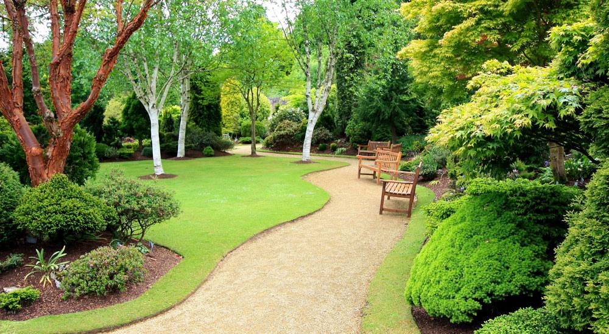

Landscape Edging Enhances Your Landscape's Ease-of-Maintenance and Beauty
Landscape edging can be a component of landscape design. Landscape edging improves the perception of the landscape created. Landscape edging is used to create landscapes such as car parking curbs, mower edges and playground edging. These are used to give a defined shape to man-made landscaping constructions.

Bright colors attract attention to the landscape edging. Comfortable colors, on the other hand, are pleasing to the eyes and not a focal point. تنسيق حدائق منزلية صغيرة Choose the right colors for landscape edging. It is important to pay particular attention to the texture and appearance of the edging. You can use coarse, medium, fine or fine to describe texture, but smooth, rough, shiny, dull, and glossy are also options.
Landscape edgings include metal edgings, plastic edgings, bricks, pavers and railroad ties. Wood timbers are also used. Concrete borders for landscaping, trees, flowerbeds and other purposes can be custom-made and made seamless. This creates a landscape outline and makes the landscape more attractive. However, before you install material, remember to consider flexibility, longevity and faster installation. Concrete can outlast metal, wood, and plastic. It can also accommodate curves and contours that are required for modern landscaping designs.
Landscape edging provides a clear lining for landscape designs. Because line is linked to movement and flow, it depends on the purpose of your design and the existing patterns. Line can be inferred from bed arrangement and landscape edging, which determines how the beds fit together or flow together. These lines are smooth, flowing, or graceful and create a natural, relaxing, progressive, moving feeling. Landscape edging is another way to define the landscape's form. Landscape edging is used to arrange the plants in the landscape. It refers specifically to measurements.
Landscape edging involves looking at a landscape from the point where it is no longer possible to see between approaching and radial lines. Landscape edging may also be used as a way to direct traffic through a garden. Without conscious effort, the eyes of the uninitiated may be drawn to a view that has commercial, aesthetic, or cultural value.
Landscape edging has an aesthetic value that is very high. شركة تنسيق حدائق You can have any quality material, but the connection with the landscape theme will create artistic appeal. You can base the materials on the paths, plants or other objects it edges. Clay can be used with brick pathways and wood can be used with water bodies.
Landscape edging is the final touch on landscape design. It defines the main parts of a landscape. It is important to plan the edging before you design the landscape. It is also an essential element in landscape design.